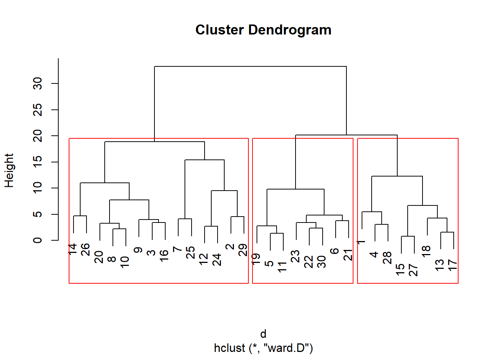
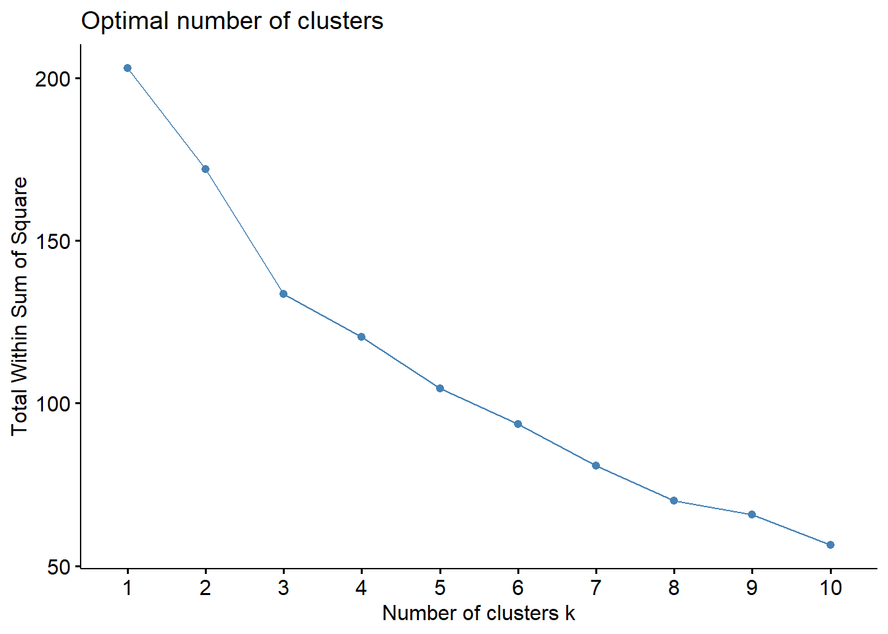

MBA Business Analytics · R · Clustering · Trimester I
Customer Segmentation
with k-means & Hierarchical Clustering
A clustering study of 30 customer records from the KTC Company demographic dataset — built in R using Quarto, applying both hierarchical (Ward.D) and k-means clustering to segment customers by Age, Income, Loan and Mortgage. Used the elbow method to identify k=3 as the optimal cluster count. Submitted as part of Introduction to Business Analytics (MBA Trimester I, Amrita School of Business, Aug 2025). Published on personal blog and rendered as a complete Quarto HTML report.
MBA Year 1 · IBA
R · Quarto
k-means + Hierarchical
Elbow Method
ggplot2 · gridExtra
30
KTC Company customer records
k=3
Optimal cluster count (elbow method)
2 methods
Hierarchical (Ward.D) + k-means
4 vars
Age · Income · Loan · Mortgage
Context
The dataset & the question
The Data
DemoKTC.xlsx — a 30-customer demographic dataset from KTC Company covering Age, Gender, Marital Status, Children, Income, Loan and Mortgage. Provided as part of the IBA coursework. The kind of dataset a marketing or product team would typically use to decide which customer segments to target with what offer.
The Question
How do you group 30 customers into meaningful, distinct segments using only their demographic and financial variables — and how do you know how many groups to create? This is the foundational marketing-analytics problem that EOQ/inventory work in supply chain is conceptually similar to: find the natural break-points in data.
My Approach
Used two complementary methods. Hierarchical clustering (Ward.D) first — gives a visual dendrogram showing how observations merge. Then k-means with the elbow method to confirm the right k. Both methods agreed on k=3. Built entirely in R with Quarto for reproducible reporting.
What I Learned
Choosing k is the hard part of clustering, not running the algorithm. The elbow method and the dendrogram are two different lenses on the same question — and when they agree, you have a defensible choice. Visualisation matters: a dendrogram with red boxes around clusters tells the story far better than a list of cluster IDs.
Method 1 — Hierarchical Clustering
Ward.D linkage on a Euclidean distance matrix
Hierarchical clustering builds a tree (dendrogram) by progressively merging the nearest two clusters until only one remains. Ward.D minimises within-cluster variance at each merge step — a good default for relatively balanced clusters.
# Hierarchical clustering with Ward.D linkage
# Variables: Age, Income, Loan, Mortgage
d <- dist(scaled_data, method = "euclidean")
hc <- hclust(d, method = "ward.D")
plot(hc, main = "Cluster Dendrogram")
rect.hclust(hc, k = 3, border = "red")

Fig 1 — Cluster Dendrogram (Ward.D linkage). Red boxes mark the 3-cluster cut. Customers split into three clear groups of roughly 13, 7 and 10 members.
Reading the dendrogram
The height axis shows the dissimilarity at which clusters merge. The two big tall branches at heights ~30 and ~20 indicate a natural 3-way split — cutting any lower would create many small fragments; cutting higher would lose meaningful separation. The three red boxes mark this 3-cluster solution.
Method 2 — k-means + Elbow
Confirming k=3 using within-cluster sum-of-squares
k-means asks you to specify k up front. The elbow method runs k-means for k=1,2,3...10 and plots the total within-cluster sum of squares (WSS) — you pick k at the "elbow," where adding more clusters stops giving meaningful WSS reduction.
# Elbow method to choose optimal k
wss <- sapply(1:10, function(k) {
kmeans(scaled_data, centers = k, nstart = 25)$tot.withinss
})
qplot(1:10, wss, geom = "line") +
labs(title = "Optimal number of clusters",
x = "Number of clusters k",
y = "Total Within Sum of Square")

Fig 2 — Elbow Plot. WSS drops sharply from k=1 (≈205) to k=3 (≈135), then declines much more gently. The bend at k=3 is the elbow — matching the dendrogram's 3-cluster split.
# Run k-means with k=3
set.seed(123)
km <- kmeans(scaled_data, centers = 3, nstart = 25)
# Append cluster labels to original data
dataset$cluster <- km$cluster
table(dataset$cluster)
# 1 2 3
# 13 7 10
Why this matters
Connecting the math to business decisions
01
Defensible choice of k. Two independent methods (hierarchical dendrogram + k-means elbow) both pointing to k=3 is much stronger than either alone. In a business context, this is what you need to defend a segmentation decision to a marketing leader who'll ask "why three segments?"
02
Segments enable targeting. Once you have stable clusters, you can profile each one (mean age, mean income, etc.) and design segment-specific offers. A "young/low-income/high-loan" cluster needs a different financial product than a "older/high-income/no-loan" cluster.
03
Reproducibility. The whole analysis is in a single Quarto (.qmd) document that renders to HTML/PDF. Anyone can clone it, re-run with their own customer data, and get an updated segmentation. This is what production analytics looks like — not screenshots of someone's Excel.
04
Connection to operations. Clustering is conceptually identical to ABC analysis in inventory (my P/07 InventoryIQ project) and to Pareto categorisation. All three answer the same fundamental question: "What are the natural groups in this data, and how do I treat each one differently?"
Files
Source & data — all downloadable
A note on this work
This was a
graded MBA submission for the
Introduction to Business Analytics course at Amrita School of Business (Trimester I, Aug 2025). The dataset (DemoKTC) was provided by the instructor; the analysis, interpretation, and Quarto report are my own work. Some scaffolding code (the rattle-generated density plots) came from the R commander / Rattle GUI tool used in the course — this is standard practice in MBA analytics coursework and the surrounding analysis is mine. The full Quarto source and rendered report are downloadable above. The project is also
published on my MBA blog for direct verification.